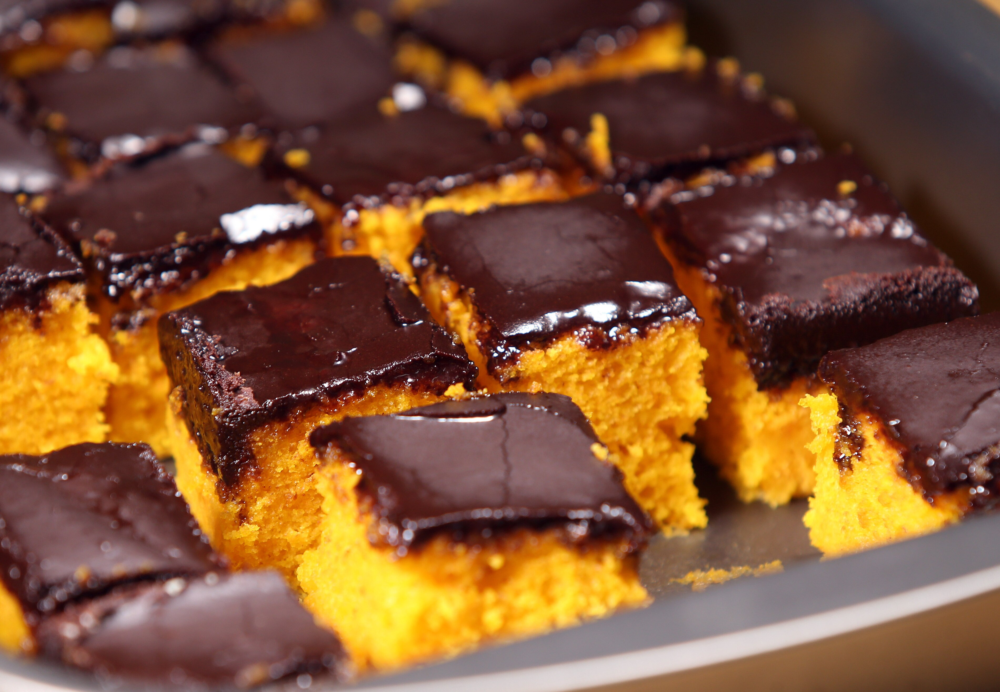

Slices of a carrot cake with chocolate frosting.
Description
This delightful carrot cake combines the natural sweetness of grated carrots with a moist,
spiced crumb, creating a perfect balance of flavor and texture. Topped with a rich, velvety chocolate frosting, it offers
a luxurious twist on the classic dessert. The earthy notes of cinnamon and nutmeg in the cake complement
the deep cocoa flavors, making it an irresistible treat for any occasion.
Ingredients
2 cups of grated carrots
1 and 1/2 cups of all-purpose flour
1 teaspoon of baking powder
1/2 teaspoon of baking soda
1 teaspoon of cinnamon
1/4 teaspoon of nutmeg
1/2 teaspoon of salt
3/4 cup of sugar
2 large eggs
1/2 cup of vegetable oil
1 teaspoon of vanilla extract
1/2 cup of chopped walnuts (optional)
1/2 cup of unsalted butter (for frosting)
1 and 1/2 cups of powdered sugar (for frosting)
1/4 cup of cocoa powder (for frosting)
2 tablespoons of milk (for frosting)
1 teaspoon of vanilla extract (for frosting)
Steps
Preheat your oven to 350°F (175°C) and grease a 9-inch round cake pan.
In a large bowl, whisk together flour, baking powder, baking soda, cinnamon, nutmeg, and salt.
In a separate bowl, beat sugar, eggs, vegetable oil, and vanilla extract until smooth.
Gradually add the dry ingredients to the wet ingredients and mix until combined.
Fold in the grated carrots and walnuts (if using).
Pour the batter into the prepared cake pan and bake for 30-35 minutes, or until a toothpick inserted in the center comes out clean.
Let the cake cool completely in the pan before transferring to a plate.
To prepare the frosting, beat together butter, powdered sugar, cocoa powder, milk, and vanilla extract until smooth and creamy.
Spread the chocolate frosting evenly over the cooled cake.
Slice and serve your delicious carrot cake with chocolate frosting!